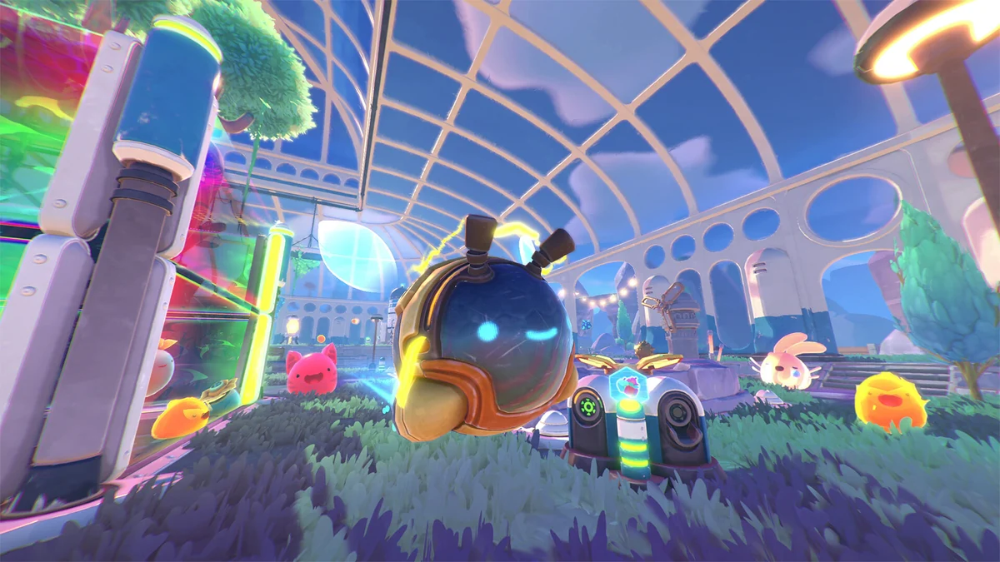

Slime Rancher 2 y el gusto de perderse
Los colores, el terreno y la gestión del rancho se combinan para que desviarse del camino merezca la pena.

En Slime Rancher 2, Beatrix LeBeau llega a la Isla Arcoíris y vuelve a montar un rancho. Salir a buscar comida puede acabar en un lugar desconocido, entre criaturas que conviene observar antes de decidir qué llevarse. El recorrido cambia a medida que algo llama la atención. El diseño de la isla da espacio a ese cambio de planes.
El paisaje orienta la mirada
Los colores y las formas ayudan a distinguir unas zonas de otras. Una formación rocosa, un paso entre plantas o un grupo de slimes al otro lado de un desnivel pueden servir de referencia. El jugador puede recordar dónde vio algo interesante y regresar después con espacio para recogerlo o con el equipo adecuado.
Las criaturas también ayudan a hacer preguntas sobre lo que se ve. Al encontrar un slime desconocido, interesa averiguar qué come, dónde aparece y si compensa dedicarle sitio en el rancho. Una silueta o un color distinto pueden ser suficientes para iniciar esa investigación.

Volver cambia la siguiente salida
El invernadero da sentido a la exploración. Lo que se recoge fuera puede servir para alimentar a los slimes, ampliar el rancho o mejorar el equipo. A su vez, las necesidades de los corrales sugieren rutas para la siguiente excursión. Una criatura que necesita cierta comida hace que un lugar ya conocido vuelva a ser interesante.
Salir, desviarse y regresar forman parte del mismo ciclo. La próxima expedición suele empezar con una intención clara, aunque un detalle en el paisaje pueda cambiarla en cualquier momento. El juego aprovecha esa tensión entre lo que el jugador busca y lo que termina encontrando.